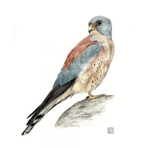
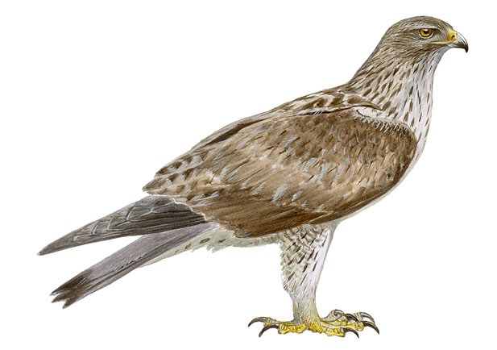
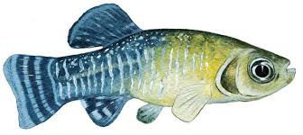

Top 3 especies en peligro de extinción

Cernicalo Primilla
Se localiza principalmente en zonas de campo abierto de cultivos herbáceos de secano y zonas improductivas. Evita ...
Ver Mas

Aguila Perdicera
Ave que nidifica principalmente en cortados calizos. Mantiene cierta competencia con el águila real, excluyéndose ambas en ...
Ver Mas

Fartet
Vive en ambientes acuáticos: charcas, lagunas litorales, salinas, ríos, etc. Se puede encontrar en aguas con ...
Ver Mas